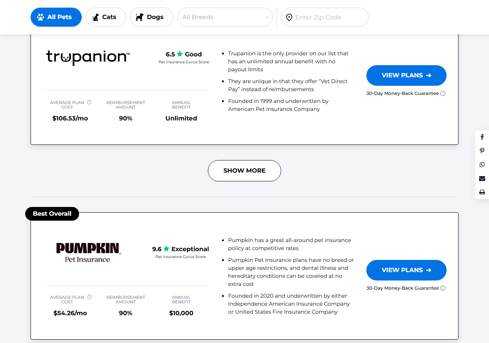
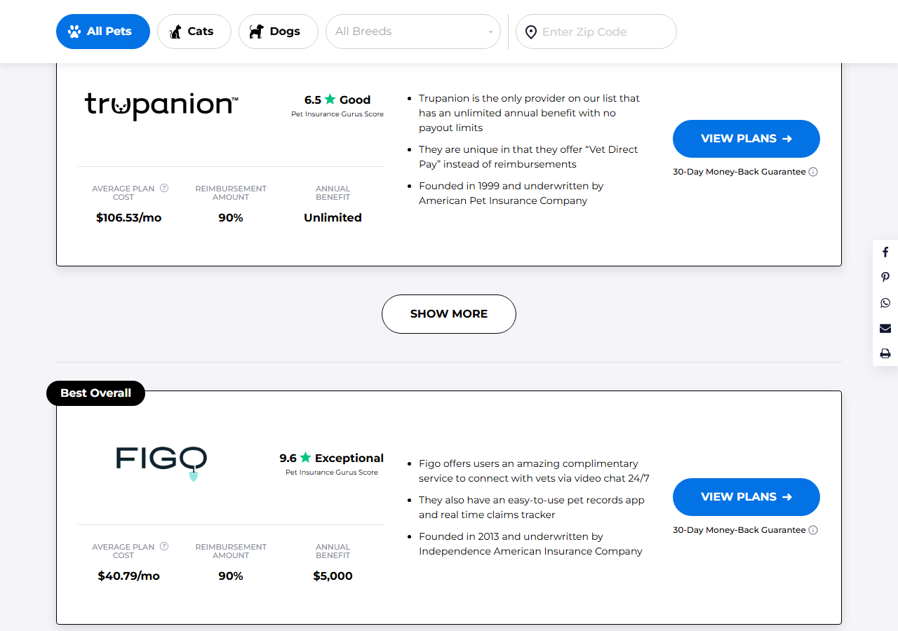
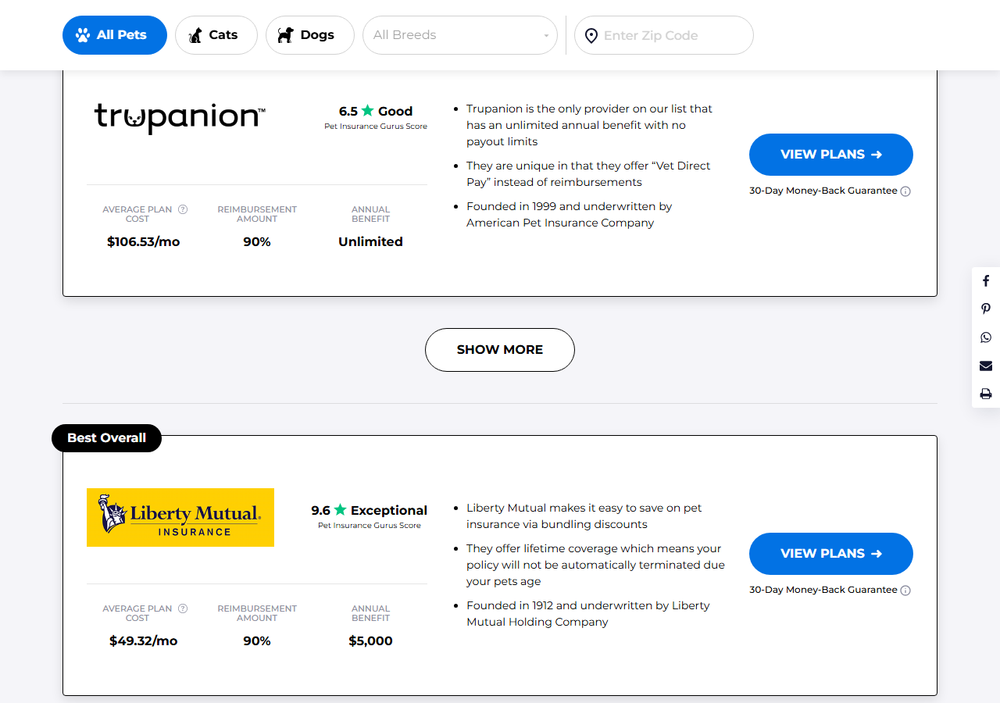
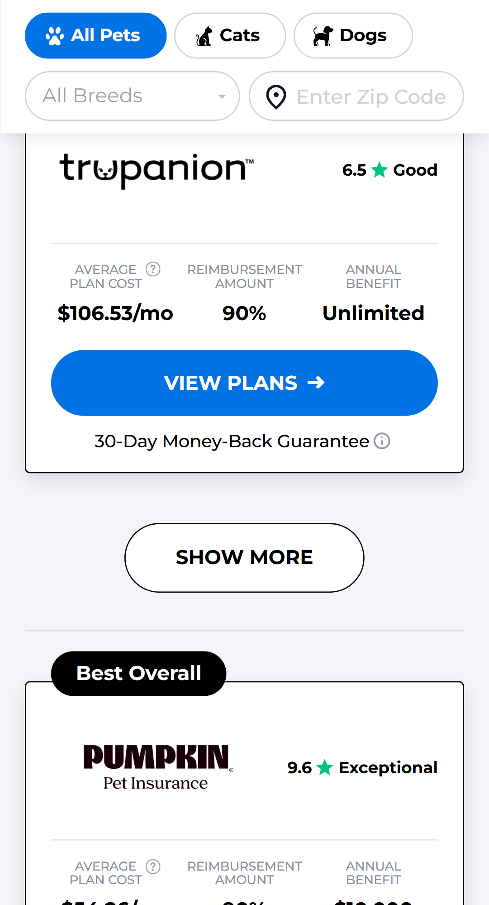
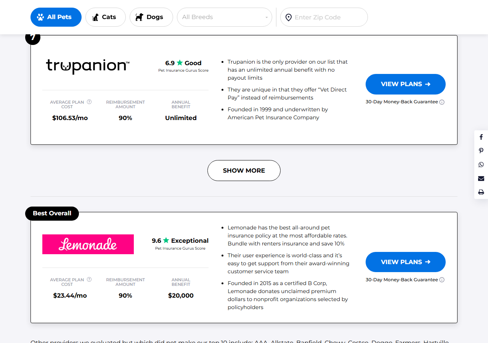
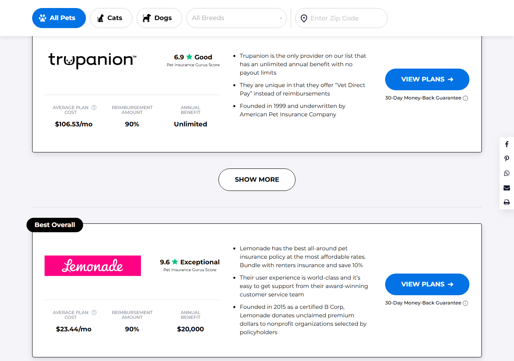

100052846 · retested 2026-09-23 (original run 2026-09-22) · Chrome Desktop (1280×900) + Mobile Chrome (Pixel 5), plus a Firefox / WebKit spot-check · tested on the client-supplied force URLs ?utm_campaign=Cromode164&_conv_eforce=100052846.<id>.cre-t-164-toggle. The missing CSS rules are present in the deployed stylesheets. V1, V2 and V3 show no regression. This experiment is clear to ship from a QA standpoint.| Variation | #1 partner | Order | Ratings | Filters | Show More after Trupanion | Yesterday | Today |
|---|---|---|---|---|---|---|---|
| V1 | Lemonade | PASS | PASS | PASS | PASS | PASS | PASS |
| V2 | Fetch | PASS | PASS | PASS | PASS | PASS | PASS |
| V3 | Embrace | PASS | PASS | PASS | PASS | PASS | PASS |
| V4 | Pumpkin | PASS | PASS | PASS | PASS — 6 visible, toggle works | BUG-01 | PASS |
| V5 | Figo | PASS | PASS | PASS | PASS — 6 visible, toggle works | BUG-01 | PASS |
| V6 | Liberty Mutual | PASS | PASS | PASS | PASS — 6 visible, toggle works | BUG-01 | PASS |
local_testing/Local2/variation/ files were deliberately not used and have not been updated with the new code, so they no longer reflect what is live. See the housekeeping item at the bottom.The ship-blocker was: V4/V5/V6 rendered all 10 cards with .cre-t-164-toggle computing to display:none. Measured again today on the same URLs:
| Variation | Cards visible on load | Last visible card | Our toggle | Native toggle |
|---|---|---|---|---|
| V4 (Pumpkin) | 6 | Trupanion | visible, display:flex, "Show More" | hidden (as designed) |
| V5 (Figo) | 6 | Trupanion | visible, display:flex, "Show More" | hidden (as designed) |
| V6 (Liberty Mutual) | 6 | Trupanion | visible, display:flex, "Show More" | hidden (as designed) |




Each of the six variations was run through the same five checks on both Chrome Desktop and Mobile Chrome — 10 assertions per variation per viewport, 120 in total, all passing, in a fresh browser context each time.
| Check | What it asserts | Result |
|---|---|---|
| A | Default state collapses to exactly 6 cards ending on Trupanion, and our injected "Show More" toggle is visible | 24/24 PASS |
| B | Clicking "Show More" expands to 10 and relabels to "Show Less"; clicking again collapses back to 6 | 24/24 PASS |
| C | Early click (0.9 s after the list renders, inside the window where the old build's interval used to fight the user) still shows 10 cards five seconds later | 12/12 PASS |
| D | Cats, Dogs and back-to-All-Pets all keep the test order, keep cre-t-164-default on <body>, and keep the 6-card collapse | 36/36 PASS |
| E | ?breed= and ?zipCode= both drop cre-t-164-default, restore the hardcoded order (Lemonade > ASPCA > Fetch > Embrace > Pumpkin > Figo > Trupanion) and hand the toggle back to native | 24/24 PASS |
cre-t-164-collapsed is not re-added by any timer. Returning to "All Pets" from a filter also does not re-collapse.Read from the rendered .cre-t-164-total values on each card. The collapsed six are positions 1–6, ending on Trupanion (bold); positions 7–10 are the hidden tail.
| Variation | Order as built (1 → 10) | Rating ladder |
|---|---|---|
| V1 | Lemonade, Fetch, Embrace, Pumpkin, Figo, Trupanion, Liberty Mutual, Odie, ASPCA, AKC | 9.6 / 8.4 / 8.5 / 8.1 / 7.4 / 6.9 / 5.1 / 4.8 / 4.5 / 4.3 |
| V2 | Fetch, Embrace, Pumpkin, Figo, Liberty Mutual, Trupanion, Lemonade, Odie, ASPCA, AKC | 9.6 / 8.5 / 8.1 / 7.4 / 6.7 / 6.5 / 5.9 / 4.8 / 4.5 / 4.3 |
| V3 | Embrace, Fetch, Pumpkin, Figo, Liberty Mutual, Trupanion, Lemonade, Odie, ASPCA, AKC | 9.6 / 8.5 / 8.1 / 7.4 / 6.7 / 6.5 / 5.9 / 4.8 / 4.5 / 4.3 |
| V4 | Pumpkin, Fetch, Embrace, Figo, Liberty Mutual, Trupanion, Lemonade, Odie, ASPCA, AKC | 9.6 / 8.5 / 8.1 / 7.4 / 6.7 / 6.5 / 5.9 / 4.8 / 4.5 / 4.3 |
| V5 | Figo, Fetch, Pumpkin, Embrace, Liberty Mutual, Trupanion, Lemonade, Odie, ASPCA, AKC | 9.6 / 8.5 / 8.1 / 7.4 / 6.7 / 6.5 / 5.9 / 4.8 / 4.5 / 4.3 |
| V6 | Liberty Mutual, Fetch, Pumpkin, Embrace, Figo, Trupanion, Lemonade, Odie, ASPCA, AKC | 9.6 / 8.5 / 8.1 / 7.4 / 6.7 / 6.5 / 5.9 / 4.8 / 4.5 / 4.3 |
Rank numbers renumber 1–10 correctly in every variation. The Best Overall duplicate card syncs to the new #1 in all six (verified: V4's Best Overall shows Pumpkin at 9.6 with Pumpkin's own copy, not Lemonade's app-store blurb). The competing cre-t-135 rating widget stays hidden under cre-t-164-default, so no double rating is shown.
The control still renders the hardcoded order with the site's own native "Show More", no cre-t-164 classes on <body>, and no injected toggle — exactly as expected:
Lemonade 9.6 > ASPCA 8.7 > Fetch 8.4 > Embrace 8.5 > Pumpkin 8.1 > Figo 7.4 > Trupanion 6.9 (7 visible, native toggle reveals the rest).


Yesterday's run covered Chrome desktop + mobile only, and flagged that the code uses :has() inside querySelector. V1, V4 and V6 were therefore re-run on Firefox and WebKit (Safari engine) at 1280×900:
| Engine | V1 | V4 | V6 |
|---|---|---|---|
| Firefox | PASS — 6 → 10 | PASS — 6 → 10 | PASS — 6 → 10 |
| WebKit / Safari | PASS — 6 → 10 | PASS — 6 → 10 (on retry, see below) | PASS — 6 → 10 |
cre-t-164 code had anything to act on. Re-run on the identical URL it loaded and passed fully (6 cards, working toggle, expands to 10). WebKit is documented as the slowest engine on this site. Flagged for transparency; it is not attributable to this test's code. Edge was not run separately — it shares Chromium with the Chrome desktop pass.Zero cre-t-164-related console errors in any variation, on either viewport. Desktop loads show 4 baseline errors and mobile shows 0 — the same counts appear on the control, and they are third-party 403 resource failures unrelated to this test.
local_testing/Local2/variation/ still holds yesterday's pre-fix code (and v2.css is still the wrong file entirely — it contains PAY13's modal CSS, dated 2026-09-07, with no cre-t-164 rules at all). The deployed Convert code is correct and is what this report tests; but anyone who tests by local injection from those files will reproduce yesterday's BUG-01 and the V2 false failure. Recommend pulling the current deployed code down into those files, or deleting them so they cannot mislead. This is the third recurrence of the shared-scratch-file trap on this client (see SWF155, PAY19).?breed= URL param, not the real MUI #breed-select combobox, which stays Mui-disabled under synthetic input on this site. One manual pass on the real widget is still worth doing.swf164-v2-retest-screenshots/. Previous (pre-fix) report: swf164-v2-six-variation-qa-report.html.